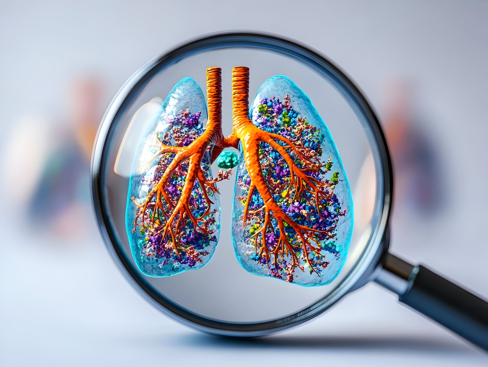

Best Pulmonology Hospital in Bangalore - Advanced Lungs Care
Breathing is effortless when your lungs are healthy. But if you've been dealing
with cold and cough, shortness of breath, or persistent wheezing that keeps coming back every season, it
could be more than "just weather." These signs may point to conditions like asthma, COPD, pneumonia or
tuberculosis that need expert care.
When breathing problems affect your daily life, you need specialized care from
experienced lung doctors. Rashtrotthana Hospital in RR Nagar, Bangalore, provides comprehensive pulmonology
treatments for all respiratory conditions. Our team of skilled pulmonologists uses advanced diagnostic tools
and proven treatment methods to help you breathe easier and live better.
Specialized Treatments for All Respiratory Issues
At Rashtrotthana Hospital, our team of experienced pulmonologists is equipped to
diagnose and treat a variety of lung and respiratory diseases. We utilize advanced technology to
ensure accurate diagnosis and effective treatment plans. We are committed to being the best hospital
for lung care in Bangalore.
Asthma and Bronchial Asthma Treatment
Living with asthma can be challenging, but with the right care, you can manage
your
symptoms and lead a normal life. We specialize in treating both asthma and bronchial asthma,
offering a full spectrum of care from diagnosis to long-term management. Our services
include
allergy testing to identify triggers, as well as personalized asthma treatment plans to
control
wheezing and other symptoms.
Pneumonia and Respiratory Infections:
Pneumonia and other respiratory infections, such as a lower respiratory
infection or upper airway infection, can be serious if not treated promptly. Our lung
specialists provide expert care for pneumonia, including managing pneumonia symptoms and
identifying pneumonia causes. We also offer treatment for flu influenza A and other viral
infections, ensuring you receive timely and effective care.
Advanced Interventional Pulmonology Services:
For more complex cases, our hospital offers advanced interventional pulmonology
procedures. These include bronchoscopy, thoracoscopy, and cryobiopsy, which allow for precise
diagnosis and treatment of conditions like interstitial lung disease, pleural effusion, and lung
cancer. Our doctors are skilled in these procedures, providing you with the best possible care.
Comprehensive Care for Chronic Conditions:
We provide long-term care for chronic respiratory diseases like COPD and tuberculosis.
Our team develops personalized treatment plans to manage your condition and improve your quality of
life. For patients with a persistent cough or breathing difficulty, we offer detailed evaluations to
get to the root of the problem and provide effective relief. We are also experts in sleep medicine
to address sleep-related breathing disorders.
Expert Insights from Our Pulmonology Specialists
Sleep Medicine Services
Comprehensive Sleep Disorder Treatment
Problems with breathing during sleep can significantly impact your health and
quality of life. Our sleep medicine specialists diagnose and treat sleep apnea, snoring and
other sleep-related breathing disorders. We offer sleep studies, CPAP therapy and lifestyle
counseling to improve your sleep quality.
Respiratory Infection Treatment
Flu and Upper Respiratory Care
Upper respiratory tract infections and flu require proper medical
attention to
prevent complications. Our team provides effective treatment for URT infections, lower
respiratory infections, and viral illnesses. We help manage symptoms and prevent the
progression
to more serious conditions.
Allergic Bronchitis Management
Allergic bronchitis can cause persistent cough and breathing difficulties.
Our
specialists provide targeted treatment that addresses both the allergic component and
respiratory symptoms. We offer comprehensive care plans that include medication therapy
and
allergen avoidance strategies.

Dr. Kolla Vinod - Best Lung Doctor in Bangalore
With 15 years of experience managing asthma, COPD, pneumonia, tuberculosis and ILD, Dr.
Kolla Vinod is known for his patient-focused approach and deep understanding of complex lung diseases.
He focuses on treating the cause - not just the symptoms - so patients experience lasting relief.
Why Choose Rashtrotthana Hospital for Pulmonology in Bangalore?
Our team of highly trained lung doctors and pulmonologists ensures accurate diagnosis and
effective treatment for every patient. With state-of-the-art facilities, we handle both routine and
emergency respiratory cases, including breathing difficulty diseases, severe asthma attacks, and complex
lung conditions.
If you are looking for the best hospital for lung care in Bangalore, we are here to help
you breathe easy again. Book your appointment today with our pulmonologist in RR Nagar, Bangalore for
expert care and lasting relief.